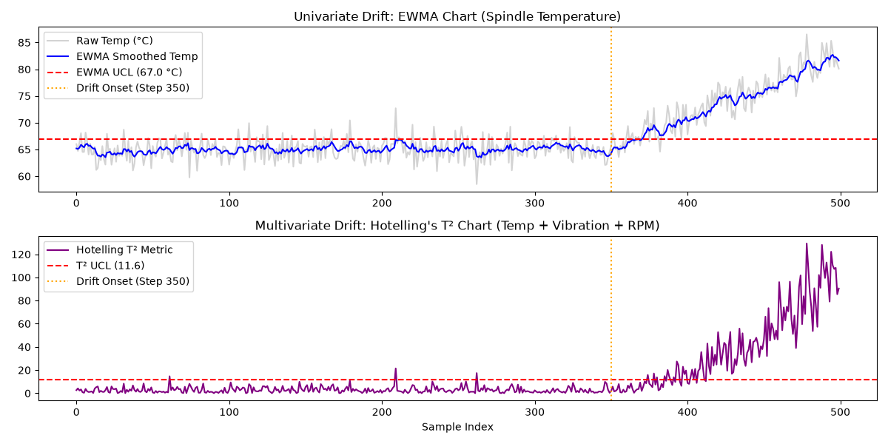

Production Line-A | Live Telemetry, YOLOv11 Computer Vision & Autonomous Agent RCA
| Defect Category | Detected Count | Impact Status |
|---|---|---|
| CRACK | 13 | CRITICAL DRIFT |
| VOID | 9 | CRITICAL DRIFT |
| SCRATCH | 1 | CRITICAL DRIFT |

================================================================================ 🏭 AUTONOMOUS ROOT-CAUSE INCIDENT REPORT: INC-2026-0329 ================================================================================ Timestamp Generated: 2026-09-28 21:26:15 Target Station: LINE-A | CNC-MILL-04 Severity Level: CRITICAL - HIGH SCRAP RISK 1. EXECUTIVE SUMMARY -------------------- A continuous cluster of 6 physical defects (CRACK) was detected by the YOLOv11 optical inspection camera. Telemetry correlation confirms statistical process control breach (Hotelling's T² breached with 0 consecutive alarm periods). 2. DEFECT CLUSTER DETAILS ------------------------- • Serial: PART-2026-SN5059 | Time: 2026-03-29 09:19:15 | Type: crack | Conf: 0.93 • Serial: PART-2026-SN5058 | Time: 2026-03-29 09:18:30 | Type: void | Conf: 0.92 • Serial: PART-2026-SN5057 | Time: 2026-03-29 09:17:45 | Type: crack | Conf: 0.98 • Serial: PART-2026-SN5056 | Time: 2026-03-29 09:17:00 | Type: crack | Conf: 0.93 • Serial: PART-2026-SN5053 | Time: 2026-03-29 09:14:45 | Type: crack | Conf: 0.92 • Serial: PART-2026-SN5052 | Time: 2026-03-29 09:14:00 | Type: crack | Conf: 0.92 3. CORRELATED SENSOR TELEMETRY ------------------------------ • Peak Spindle Temperature : 83.2 °C (Baseline: 65.0 °C) • Peak Vibration Amplitude : 2.032 mm/s (Baseline: 1.20 mm/s) • Hotelling's T² Breaches : 0 alarms logged in incident window 4. DEDUCED ROOT CAUSE --------------------- Spindle Bearing Overheating & Eccentric Vibration. Frictional thermal expansion is inducing micro-cracks and thermal voids on the workpiece. 5. RECOMMENDED CORRECTIVE ACTIONS --------------------------------- 1. Immediately halt Line-A spindle rotation. 2. Inspect spindle bearing lubrication and coolant flow. 3. Perform vibration spectrum check for bearing raceway spalling. ================================================================================